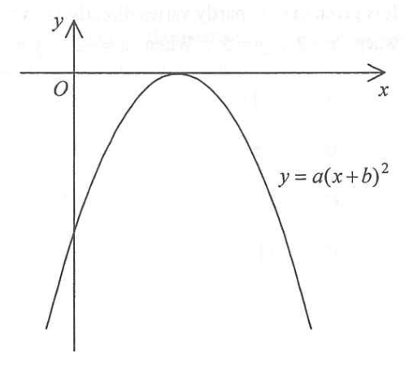

7. Functions and Graphs — Reading off \(a\) and \(b\) from a quadratic graph
The figure shows the graph of \[ y = a(x+b)^2, \] where \(a\) and \(b\) are constants. Which of the following is true?
A. \(a > 0\ \) and \(\ b > 0\)
B. \(a > 0\ \) and \(\ b < 0\)
C. \(a < 0\ \) and \(\ b > 0\)
D. \(a < 0\ \) and \(\ b < 0\)
The given figure shows a downward-opening parabola whose vertex (turning point) touches the positive \(x\)-axis.

In \(y = a(x+b)^2\), the constant \(a\) controls which way the parabola opens. Drag the slider to change \(a\) and watch the curve.
Compare \(y = a(x+b)^2\) with the given graph. The graph opens downwards, so the coefficient of \(x^2\) is negative.
Test it on the canvas: when \(a>0\) the curve is a "smile "; when \(a<0\) it is a "frown ". The figure is a frown, so \(a\) is negative.
The vertex of \(y=a(x+b)^2\) is the point where \(x+b = 0\), i.e. \(x=-b\). In the figure the vertex lies on the positive part of the \(x\)-axis, so \(-b > 0\). Move the slider to see the vertex travelling.
Put the equation in vertex form: \(y = a\,(x - (-b))^2\).
The vertex is at \[ x = -b, \qquad y = 0. \]
From the figure the vertex lies on the positive \(x\)-axis:
\[ -b > 0 \quad\Rightarrow\quad b < 0. \]